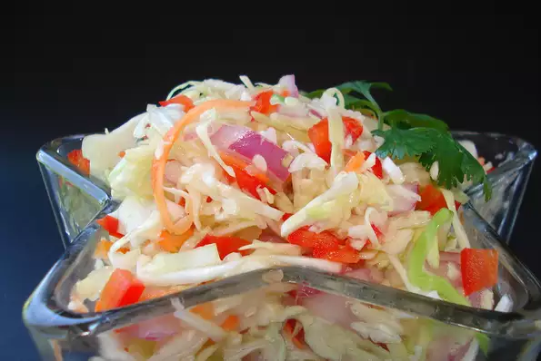

Angie's Dad's Best Cabbage Coleslaw
An absolutely delicious coleslaw, more tart and tangy than the creamy kind. Can make this up to 2 weeks ahead of serving and it only gets better.

Ingredients
- 1 medium head cabbage, shredded
- 1 large red onion, diced
- 1 cup grated carrots
- 2 stalks celery, chopped
- 1 cup white sugar
- 1 cup white vinegar
- ¾ cup vegetable oil
- 1 tablespoon salt/li>
- 1 tablespoon dry mustard
- black pepper to taste
Directions
- In a large bowl, combine cabbage, onion, carrots, and celeryand mix well.
- In a small saucepan, combine vinegar, oil, salt, dry mustard, and pepper. Bring to a boil
- Pour hot dressing over cabbage mixture, and mix well.
Cook's Note:
This is best if made a day ahead to 2 weeks ahead. If you make it far ahead, drain juice prior to serving.
Nutrition Facts
Per Serving: 131 calories; protein 0.9g; carbohydrates 14.1g; fat 8.4g; sodium 364.3mg. Full Nutrition